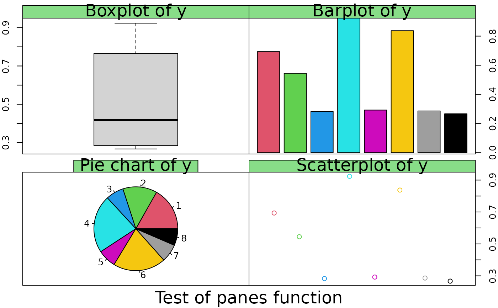
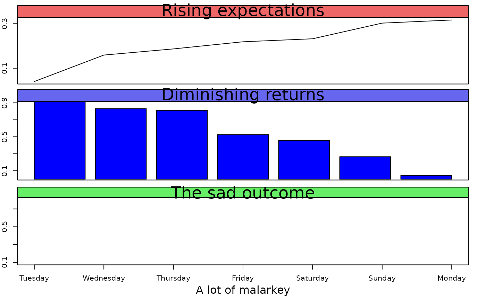

Prepare a "panel" type layout
panes.RdSplit the graphics device into a "panel" type layout for a group of plots
Arguments
- mat
A matrix representing the number of panes to be created and their order of plotting.
- widths,heights
The widths and heights of the panes. See layout.
- nrow,ncol
The numbers of rows and columns in the layout. See par(mfrow).
- mar
The margins for each plot in the panes.
- oma
The outer margins for the entire group of panes.
Details
panes combines the information for displaying a set of plots in a "panel" layout. The default values will usually produce the desired result by calling par(mfrow). If mat is not NULL, the layout function will be called instead of par(mfrow). The two methods are included for the convenience of the user.
Note that panes does not produce any plots and that the user must call tab.title to get the "look" of the panel plot. The overall title is usually centered at the left edge (as in the example) or in the center of one of the plots in the bottom row.
Value
The values of par options that existed when panes was called. This list is usually used to restore those values.
Examples
y<-runif(8)
oldpar<-panes(matrix(1:4,nrow=2,byrow=TRUE))
par(mar=c(0,2,1.6,0))
boxplot(y,axes=FALSE)
axis(2)
box()
par(mar=c(0,0,1.6,2))
tab.title("Boxplot of y",tab.col="#88dd88")
barplot(y,axes=FALSE,col=2:9)
axis(4)
box()
tab.title("Barplot of y",tab.col="#88dd88")
par(mar=c(2,2,1.6,0))
pie(y,col=2:9)
tab.title("Pie chart of y",tab.col="#88dd88")
box()
par(mar=c(2,0,1.6,2))
plot(y,xaxs="i",xlim=c(0,9),axes=FALSE,col=2:9)
axis(4)
box()
tab.title("Scatterplot of y",tab.col="#88dd88")
# center the title at the left edge of the last plot
mtext("Test of panes function",at=0,side=1,line=0.8,cex=1.5)

panes(matrix(1:3,ncol=1),heights=c(0.7,0.8,1))
#> $mar
#> [1] 2.0 0.0 1.6 2.0
#>
#> $mfrow
#> [1] 2 2
#>
#> $oma
#> [1] 0 0 0 0
#>
par(mar=c(0,2,2,2))
plot(sort(runif(7)),type="l",axes=FALSE)
axis(2,at=seq(0.1,0.9,by=0.2))
box()
tab.title("Rising expectations",tab.col="#ee6666")
barplot(rev(sort(runif(7))),col="blue",axes=FALSE)
axis(2,at=seq(0.1,0.9,by=0.2))
box()
tab.title("Diminishing returns",tab.col="#6666ee")
par(mar=c(4,2,2,2))
tso<-c(0.2,0.3,0.5,0.4,0.6,0.8,0.1)
plot(tso,type="n",axes=FALSE,xlab="")
if (FALSE) {
# the following needs a Unicode locale to work (and a suitable font)
# Few devices can plot these -- and not the default pdf() for checking.
points(1:7,tso,pch=c(rep(-0x263a,6),-0x2639),cex=2)
}
axis(1,at=1:7,
labels=c("Tuesday","Wednesday","Thursday","Friday","Saturday","Sunday","Monday"))
axis(2,at=seq(0.1,0.9,by=0.2))
box()
tab.title("The sad outcome",tab.col="#66ee66")
mtext("A lot of malarkey",side=1,line=2.5)

par(oldpar)